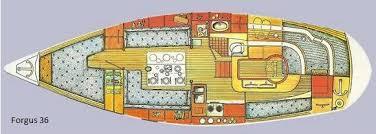

forgus36
Forgus 36

Seilbåten Silja kom i vårt eie sommeren 25. Vi var på vei hjem fra sommerens seiltur og var på vei fra Håøya med kurs for hovedøya
når plutselig det kom et varsel fra finn.
Jeg tok en rask kikk og sa til Elisabeth: Her er båten!
Vi var raske med å ta kontakt... Og båten, den ble vår :)
historien
bygget på Orust av Hugo samuelsson
Årsmodell 1988
dimensjoner
lengde: 10,8 m
bredde: 3,42 m
dypgående: 1,8 m
lystall: 1,16
Historikk
Båten ble orginalt gitt navnet spleis da de første eierne spleiset på båten